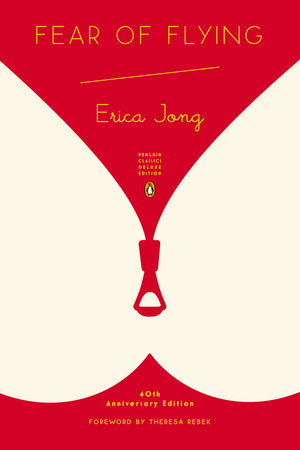
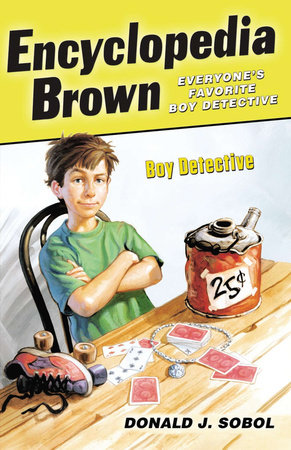
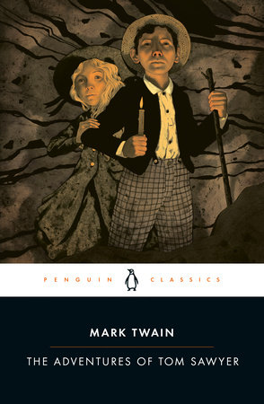
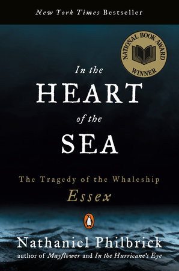

Five Best Stories
1.Story of Letting Go
2.Fear of Flying
3.Encyclopedia Brown, Boy Detective
4.The Adventures of Tom Sawyer
5.Encyclopedia Brown, Boy Detective
Book Name:Letting Go
Author:Philip Roth
Book Title
1.Story of Letting Go
My dad gave me the novel Letting Go by Philip Roth. Dad read very little fiction—only one book of fiction a year. He was a political scientist, and he read dozens and dozens of non-fiction, academic books every year. But he always became enthusiastic about his one, annual book of fiction, which he would then recommend to everyone. He loved Roth. I like the novel, because it is Roth’s second—and unfamous—book; the writing shows his earnestness. He was looking for his voice then. I love the early novels of writers, for that same reason.” —Josh Barkan, author of Mexico
Home
Book Name:Fear of Flying
Author:Erica Jong’s
Book Title

2.Fear of Flying
“Knowing it is my favorite book, for my 34th birthday, a boyfriend once gave me a signed first edition of Erica Jong’s Fear of Flying. Having always read tattered paperback versions, I had no idea the original was adorned with a spectacularly ornate cover that’s evocative of a Hieronymus Bosch. I’m not a big collector of anything but no matter how often I pare down my belongings, I never get rid of this. (Even though the boyfriend was long-ago lost to history, his accompanying birthday card remains tucked inside the book.)” —Lisa Napoli, author of Ray & Joan
Home
Book Name:Encyclopedia Brown, Boy Detective
Author:Donald J.Sobol
Book Title

3.Encyclopedia Brown, Boy Detective
“One afternoon when I was seven years old, my mom and I went to our local bookshop, The Twig, in San Antonio, Texas, where she picked a book out for me that I was sure I was going to hate: Encyclopedia Brown, Boy Detective by Donald J. Sobol. But from the first page to the last, I was hooked, falling in love with Leroy Brown, Idaville’s ten-year-old boy sleuth, and I ended up owning every one of the twenty-eight books in the series. I was pretty good at figuring out the whodunits and decided that I was going to be a detective myself when I grew up. Instead, I became a writer, which, I see now, is a lot like being a detective, except that as a writer I have both to create the mystery and solve it at the same time. There’s a real art to writing suspense and while I’m not sure I’ll ever master it, I can definitely say that reading Encyclopedia Brown whet my appetite for it and taught me quite a lot about the form. Even now, I’m not sure that I would have been able to write, Tell Me How This Ends Well, my latest novel, if I hadn’t been exposed all those years ago to Leroy Brown.”
Book Name:The Adventures of Tom Sawyer
Author:Mark Tawin
Home
Book Title

4.The Adventures of Tom Sawyer
“On my eighth birthday my mother gave me a hardcover copy of The Adventures of Tom Sawyer. The inscription read: ‘Here is the brother you said you wanted.’ I was having trouble in school—particularly reading—and a psychologist had recently tested me and informed my mother and the school that I was, in the parlance of the day, ‘retarded.’ My mother steadfastly refused to accept this, saying, ‘You just haven’t found anything you care enough about to read.’ It turned out I was dyslexic and perhaps mildly autistic. It took me months, and when I was done, I could read, and I had indeed been given a brother—two, in fact, and I have visited with them every year since my eighth birthday.”
Book Name:In The Heart Of Sea
Author:Nathaniel Philbrick
Home
Book Title

5.In The Heart Of Sea
Many years ago I was boarding a plane to Las Vegas, planning on doing two things I really enjoyed: gambling and reviewing All-You–Can-Eat buffets (I was young. Thankfully, I got both habits out of my system.). Also boarding was a large passenger sneezing and wheezing. Here was someone who desperately needed a bowl of chicken soup and a flight refund. While he squeezed his way down the aisle looking for his seat, everyone on the plane was thinking the same thing I was—I hope he doesn’t sit next to me. As he settled in next to me, I imagined the worst. Needless to say, by the end of the flight, we not only became friends who still keep in touch twenty years later, but he recommended a book which changed my life. During the flight, he sold me on In the Heart of the Sea by Nathaniel Philbrick. I asked my mom for this book for Christmas and as my Vegas friend promised, the book was extraordinary. So much so, it convinced me to write my own. Up until that point, I wrote comedy pieces and columns in publications but never anything long-form. Speed up to today—20 years later—In the Heart of the Sea has been adapted into a movie and now that I’ve finished my current project (Footnotes from the World’s Greatest Bookstores), I plan to publish that illustrated novel inspired by my favorite book. Called The Sea Below Us, it’s a black comedy about the missing Sir John Franklin. I sent a manuscript to Nathaniel Philbrick—whom I have also met and kept in touch with over the years—and thanked him for the inspiration his book provided. He loved the manuscript.
Home